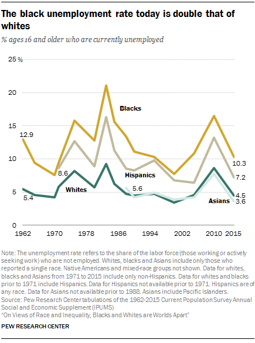

Old
Welfare programs mainly started in the 1930’s. Between 1932 and 1935, Presidents Hoover and Roosevelt passed many legislations which aimed to relieve states and their individuals of stress during times of economic recession. Many of these policies included writing checks to help the state ventures and individuals within states. Over the next few decades, more policies following the philosophy of the originals emerged, and became more involved with the individual. While these programs were intended to benefit all, the racist environment led to lots of discrimination.
Many of the past social programs required people to be working or earning certain reported income to be eligible fro welfare programs. WHile this was not a problem for many, it became one for many blacks and hispanics. They were less likely to receive jobs because of their race, and were often paid “off the books” or in cash, which prevented them from access to these programs. Furthemore, some programs had residency requirements, and due to other policies that barred blacks from moving into different neighborhoods, black families were not eligible for a lot of programs.
Many whites prospered under the programs, which did a good job of helping the impoverished feed themselves and find work. Because of a simple misunderstanding of black families and culture, and the notion that anyone who works hard can be able to alleviate themselves from poverty, black families got little help. While whites prospered and found pathways out of the poverty cycles, blacks and hisapnics dug deeper holes as they received no help. While this will eventually change, racism and discrimination in welfare will prevail.
Data from Pew Research Center showing the black poverty rate in comparison to that of whites.